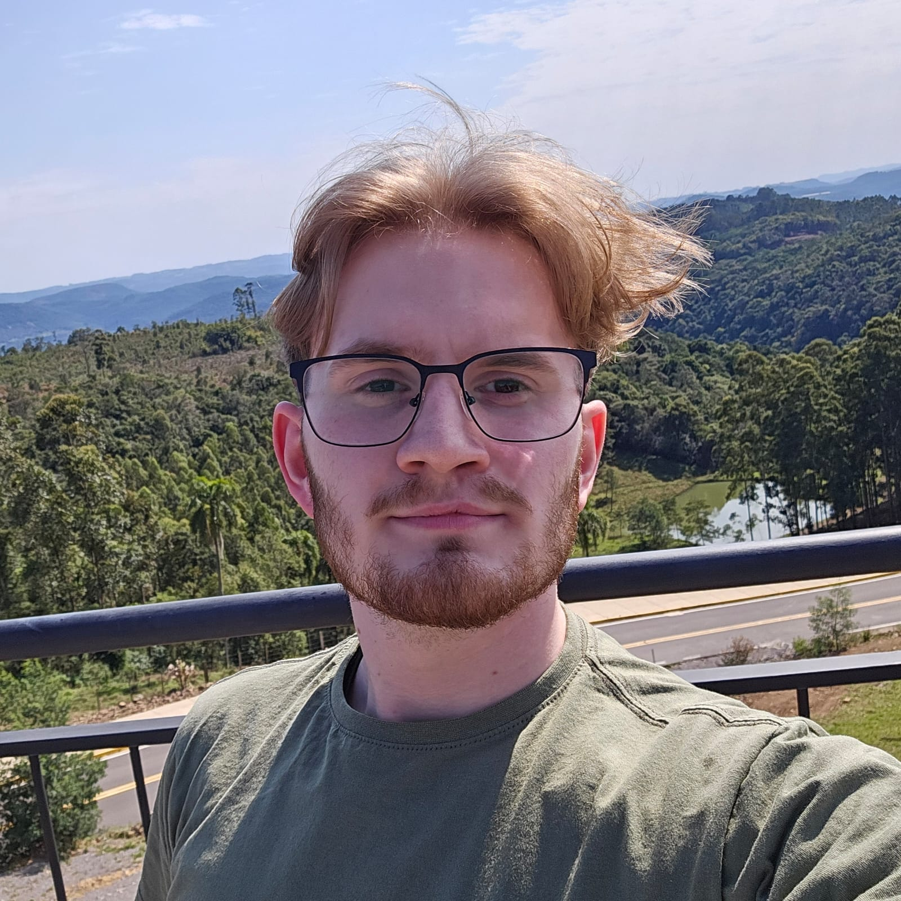
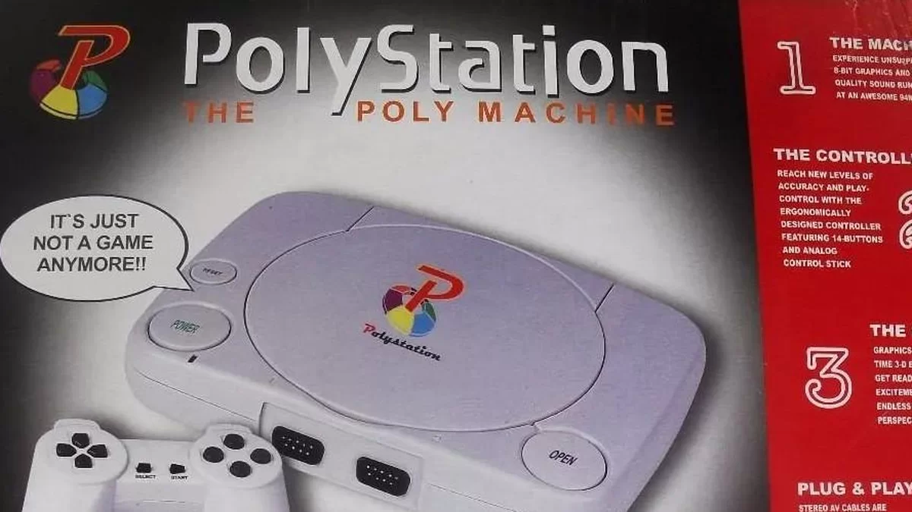

Meu nome é Gustavo Henrique Raber, tenho 21 anos, moro em Não-Me-Toque/RS.

Meu nome é Gustavo Henrique Raber, tenho 21 anos, moro em Não-Me-Toque/RS.
Acredito que o meu interesse por informática, assim como de muitos, surge do mundo dos games.
Quando era mais novo, ganhei de presente um PolyStation, um videogame imitação do PlayStation 1, porém ele funcionava com cartuchos, que frequentemente paravam de funcionar e precisavam ser assoprados para voltar a vida.

Foram muitas tardes jogando SuperMario, Galáxia e um jogo de atirar em patos voadores com a pistola que vinha junto com o videogame e muitos outros.
Após o PolyStation, eu tive um computador desktop, windows XP (ou será que era 97 ?). Passava horas jogando, lembro que tinha um amigo mais velho, que tinha internet, e pirateava jogos em CD e me dava de presente para jogar nessa bomba. Depois desse tivemos mais 3 computadores parecidos, não tínhamos muita grana então era o que meus pais conseguiam me disponibilizar. Acho até que temos um ainda...
Mortal Kombat 1, 2 e 3, Sonic, Mario, um jogo de plataforma de um elefante e muitos outros jogos. Lembro de jogar junto com meu pai um jogo de sinuca, o véio É BOM na sinuca, vocês não tem ideia, nem preciso dizer que nunca ganhei dele, nem em mesa, nem no PC.
Então minha irmã precisando de um computador comprou o primeiro computador "de verdade", um notebook que apelidei carinhosamente de torradeira, porque hoje ele serve mais para fazer torrada de tanto que esquenta.
Junto dele veio a internet, e foi aí que tudo mudou. O mundo mágico dos jogos online, Friv, jogos do falecido Orkut (que Deus o tenha) e posteriormente do Facebook mudaram minha concepção de computadores e desenvolveram um interesse por esse tipo de máquina em mim. Além de jogos online também tínhamos os clássicos: Counter-Strike: Source, Need For Speed: Underground 2, Minecraft entre outros.
Desse interesse veio a curiosidade, um dos princípios os quais regem minha existência nessa terra. "Como funciona?", "Por que funciona?", daí comecei a pensar nessa área de desenvolvimento. Enquanto tentava jogar RPG com um grupo de amigos resolvi fazer um programa de PC, (programado em C# ou C++, não me recordo) tendo zero experiência com programação, para funcionar como dado e fazer a comparação dos valores do dado com os atributos da ficha e retornar o resultado da rolagem. Puxando de memória a pior estrutura já vista, mas foi ali que comecei a programar e percebi a diversão que é fazer o PC fazer o que eu queria.
Apesar de ter parado de programar após isso, nunca deixei de ser curioso e procurar sobre teoria e lógica de computadores e programação.
VoltarHoje trabalho na Stara. Uma empresa de implementos agrícolas com muita tecnologia embarcada nas máquinas.
Trabalho no setor de Logística, no time de programação, mas não é programação de Dev, é programação de PCP, controle de produção, fábrica, indicadores etc. Dentro da programação trabalho na equipe de Desenvolvimento, agora sim estamos falando de programação de desenvolvimento, de Dev.
Meu trabalho é fazer desenvolvimento de automações de processos e indicadores/dashboards. Para isso, uso SQL para montar as queries e extrair informações direto do banco de dados da empresa, para facilitar a extração dos dados para os relatórios. Como trabalho com pessoas que usam o Excel, a ferramenta mais fácil para os clientes usarem é o próprio Excel, então a linguagem que uso para fazer as automações de processo é VBA, uma linguagem muito ruim cuja IDE é o próprio Excel. Pelo menos os princípios de lógica de programação funcionam normalmente (ou quase).
Quando comecei na Stara meu trabalho dentro da programação era fazer o controle de estoque, dos erros de inventário, nada a ver com a área de informática. Após o time de Controle, que era o nome da equipe, ser desfeito fui "adotado" pela equipe de Desenvolvimento. Onde me desafiaram a fazer indicadores e recebi a oportunidade de fazer um treinamento de VBA, onde comecei a aplicar os conhecimentos de informática, lógica de programação no meu trabalho.
Antes de trabalhar na Stara, trabalhei na Corimpress, uma gráfica especializada em adesivos, cujo principal cliente é a Stara ( curioso não?). Lá fui estagiário por 6 meses. Trabalhava na laminação dos adesivos, que é a aplicação da camada plástica de proteção sobre a impressão.
Antes da Corimpress fiz Senai de Operador de Máquinas CNC, meu primeiro "emprego", muito pela influência da minha irmã e pai que trabalham na empresa Jan, outra empresa de implementos agrícolas de Não-Me-Toque. Lá consegui aplicar um pouco da lógica de programação devido à forma que as máquinas CNC são programadas.
VoltarEnquanto crescia devido à minha curiosidade fiz cursos de informática avançada que incluía o pacote Office, comandos do Windows e funcionamento básico do PC. Também fiz um curso de montagem e manutenção de computadores, sempre tive e ainda tenho muito interesse na parte de hardware do computador, mas sem dúvidas o interesse maior que tenho é na parte de software. Também fiz um curso de comunicação e oratória para aprender a falar em público. Algo que até hoje não é muito meu forte, mas venho trabalhando nesse aspecto.
Durante a escola sempre fui um aluno bom, notas boas, mas sempre com aquele ponto nas reuniões de pais e mestres "Gustavo fala de mais...". Durante o Ensino Médio no segundo e terceiro ano, foram os anos do covid. Não sei se tem influência, mas o Ensino Médio me saturou completamente de escolas no geral. Precisei de um tempo para respirar e fazer outras coisas. Enquanto meus colegas estavam saindo do Ensino Médio e indo para faculdade eu foquei no trabalho e na Academia. E por isso comecei a faculdade somente em 2026, 4 anos após o ensino médio.
Durante o trabalho foram disponibilizados a mim diversos cursos. Os mais marcantes foram um de Ensino Correto do Trabalho, um curso de comunicação e tratamento de pessoas. Um curso de Analista de Negócios, que o professor foi o Zanata, que hoje é meu professor da faculdade, onde aprendemos a fazer levantamento de requisitos e um apanhado geral sobre essa parte de análise de necessidade dos clientes. E um curso de desenvolvimento de Script de VBA, que foi um dos pontapés iniciais para eu consolidar meu trabalho na Stara da forma que é hoje.
E por fim agora estou fazendo a faculdade de Análise e Desenvolvimento de Sistemas na Universidade de Passo Fundo onde estou tendo a matéria de Desenvolvimento Web com o professor Pablo Leon que pediu como trabalho final do curso esse blog pessoal.
VoltarAlém de tecnologia, foco principal do blog, também tenho interesse em leitura como hobby e como aprendizado apesar de estar lendo menos nesse ano. Minhas leituras foram muito focadas em desenvolvimento pessoal, como "Os Sete Hábitos das Pessoas Altamente Eficazes" e o "A Arte de Lidar com Pessoas" que foram leituras muito influenciadas pelos meus líderes na Stara devido a essa jornada de aprendizado na área de comunicação que estou tendo dentro da empresa. Do lado da leitura como hobby li a trilogia INCRÍVEL de "Mundo em Caos", meu favorito sendo "The Ask and the Answer", segundo livro da trilogia.
Outro interesse pessoal meu é manter uma vida ativa. Hoje mantenho o hábito de fazer academia. Faço 3 vezes na semana para manter o corpo saudável e a mente sã. E estou focado em um processo de emagrecimento, pulando corda 4x na semana, 2 mil pulos por dia para tentar ajudar no processo.
Animes, mangás, manhwas, quadrinhos, filmes da Marvel/DC, tudo que é conteúdo geek também me interessa muito. Anime favorito: Tensei Shitara Slime Datta Ken, Tensura, ou simplesmente "anime do Slime" como meus amigos o conhecem, é simplesmente o melhor anime de todos para mim. Confesso que tenho um fraco para tópicos de isekai. Acho os mundos de fantasia e aventura cativantes e, sem dúvida, o universo de Tensura é um dos melhores world-buildings que já vi.
Como um bom nerd, também me interesso em RPGs de mesa, que foi o catalisador inicial para eu entrar na programação (devido ao programa que tive que fazer para rolar os dados). Já fui mestre de mesa e já fui jogador. Criei meu próprio sistema para jogar com meus amigos, já joguei D&D, ShadowDark, Vampiro a Máscara e, sem dúvida, um dos mais legais e simples sistemas de todos é Rolo por Sapatos. Me divirto muito. Estar nos mundos de fantasia que tanto me cativam, ou pelo menos fingir que, é extremamente divertido para mim.
MÚSICA, meu deus como eu gosto de música, esse blog todo esta sendo feito ao som de música, sempre que possivel estou escutando algo nos meus fones. É uma pena que eu não entenda NADA sobre. Minhas playlists são feitas com o seguinte critério "Música boa, gostei, vai pra playlists". Escuto de tudo sinto que sou bem eclético, obviamente, tenho preferencias, metal acredito que seja meu gosto favorito de todos os tempos e recentemente tenho ouvido bastante rap nacional também, além de folk, influência inicial de um amigo, muito bom.
E por último, mas definitivamente não menos importante, um interesse muito grande na minha vida são motos. Hoje tenho uma Honda CBR250R 2012. E pretendo futuramente comprar uma Kawasaki ZX6R, mas só depois de conquistar a casa própria. Gosto das motos carenadas, esportivas, mas não discrimino, piloto o que for, menos Biz, não entendo como conseguem andar naquele negócio, muito desconfortável para mim. Já deixei claro para quem convive comigo, a meta um dia é ter umas 10 motos, uma para cada estilo de pilotagem. Mas para isso ainda falta... e falta muito HAHAHA.
Voltar